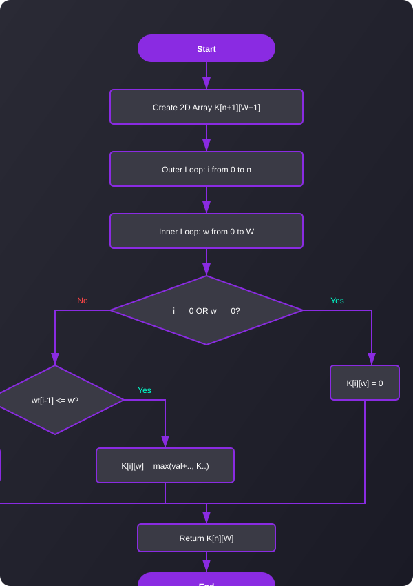

0/1 Knapsack Problem
Maximize value within a given weight capacity constraint.
Time Complexity
O(n * W)
Space Complexity
O(n * W)
Maximize value within a given weight capacity constraint.
Given weights and values of n items, put these items in a knapsack of capacity W to get the maximum total value in the knapsack. In the 0-1 Knapsack problem, we are not allowed to break items. We either take the whole item or don't take it.
This is a classic Dynamic Programming problem because it has both Overlapping Subproblems and Optimal Substructure properties.
Create a 2D array dp[n+1][W+1] initialized to 0. dp[i][w] represents the maximum value that can be attained with weight less than or equal to w using items up to i.
Loop through each item i from 1 to n.
For each item, loop through each possible capacity w from 1 to W.
If weight of the current item is less than or equal to w, take the maximum of (including the item, not including the item). Else, do not include it.
The answer is stored in dp[n][W].
A visual representation of the DP Knapsack algorithm.
